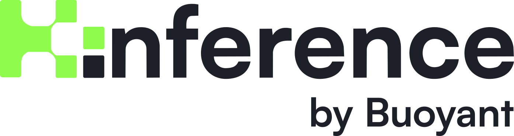
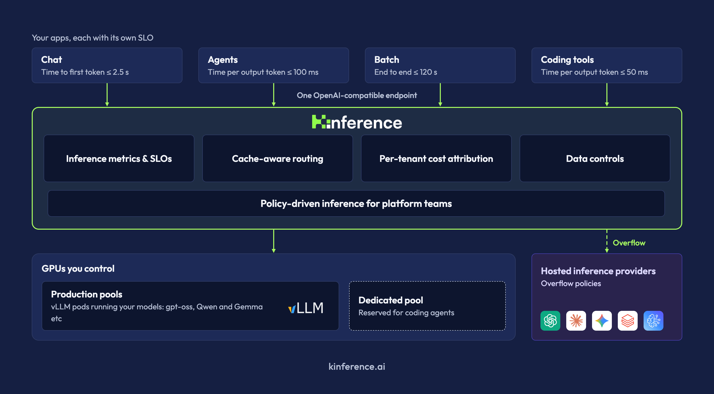
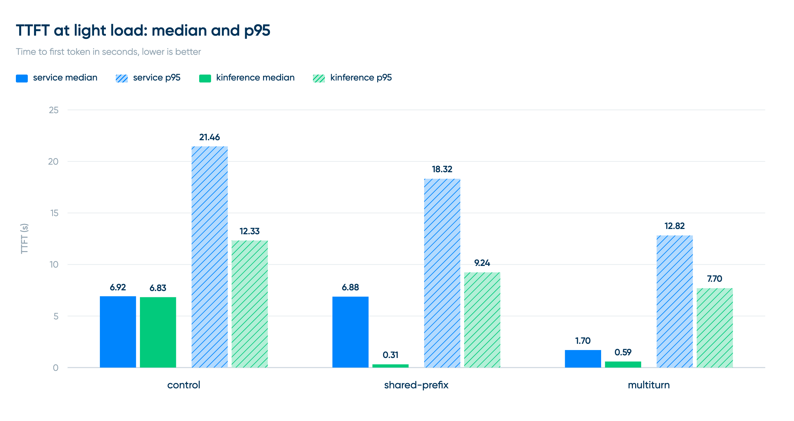
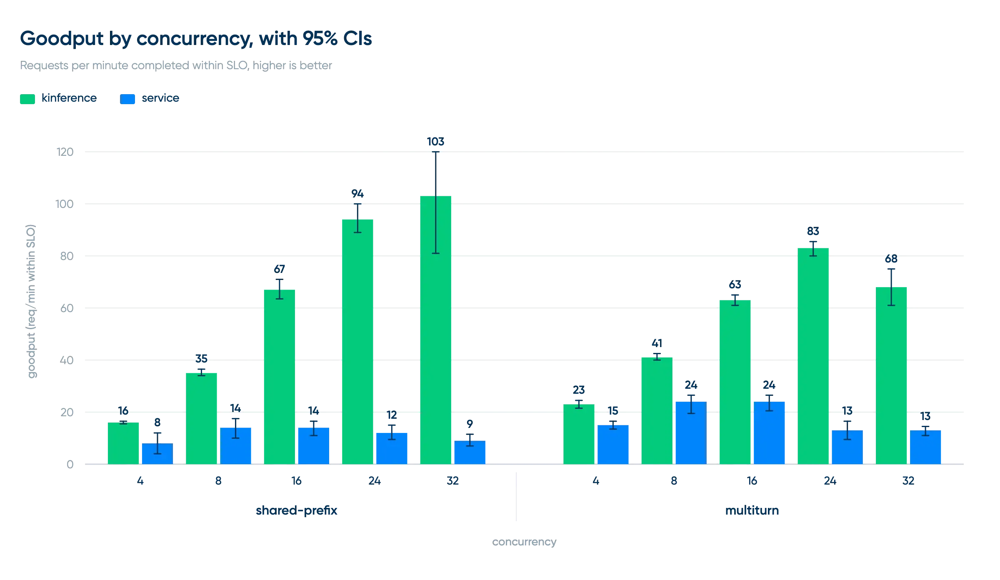
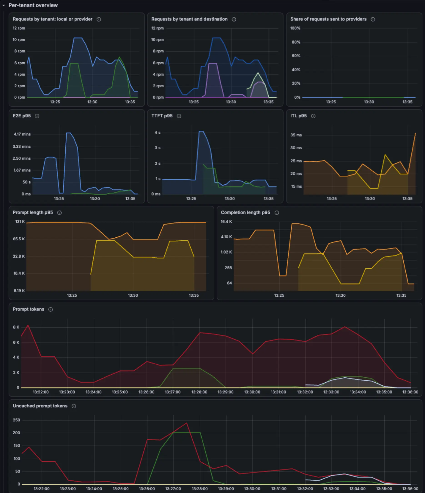

Kinference：面向 vLLM 与 Kubernetes 的开源推理控制平面
我们很高兴宣布推出 Kinference（读作 kay-inference）——一个使用 vLLM 构建可扩展推理平台的新开源项目。

我们在 Buoyant 创建 Kinference，是因为看到许多客户难以在自己的环境中运行开放权重模型。Kinference 被设计为推理平台的控制平面层：底层推理由 vLLM 执行，它则提供实际构建推理平台所需的一整套能力，包括 token 速率限制、租户用量与成本跟踪、智能负载均衡以及推理策略。

Kinference 可以与现有技术栈配合使用。接入方式很简单：让推理客户端指向它的 HTTP 端点，并向该端点发送兼容 OpenAI 或 Anthropic 的推理流量。
Kinference 面向不断演进且彼此异构的客户端，为运行在同样不断演进、异构 GPU 池上的各种模型提供服务。
推理负载均衡与性能
除策略和路由层外，Kinference 还提供推理专用负载均衡。它会考虑 GPU 队列长度、历史性能以及 GPU 中 KV 缓存的内容等信号。尤其是 KV 缓存感知能力，使 Kinference 能将请求发送给处理该请求所需工作量最少的 vLLM worker。
对 GPU KV 缓存内容建模可以显著提升分布式推理性能。例如，在我们的公开 Kinference 基准测试中，与标准 Kubernetes 负载均衡（下图标记为“service”）相比，在一种工作负载上，Kinference（标记为“kinference”）将请求的首 token 时间（TTFT）中位数降低了 95%，端到端延迟中位数降低了 45%。

将缓存感知纳入策略后，平台所有者可以把简单请求发送给成本更低的模型，但前提是这样做确实比直接发送给昂贵模型所需的工作量更少。
上面的无负载延迟测试旨在单独测量 Kinference KV 缓存感知负载均衡的效果。下面的容量测试则测量各端点在满足延迟服务等级目标（SLO）时每分钟能够处理的请求数。

在容量测试中，Kinference 在共享前缀工作负载上的有效吞吐量达到 7.4 倍，在多轮对话工作负载上约为 3.5 倍。对于共享前缀工作负载，它在并发度 32（测试的最高并发度）时仍能达到选定的 SLO；对于多轮工作负载，则可在并发度 8 时达到 SLO。相比之下，kube-proxy 方案在任何测试并发度下都无法达到该 SLO。
基准测试环境、过程和完整结论可参阅这篇文章。
策略驱动的方法
Kinference 的核心概念是推理策略（inference policy）。
推理策略帮助平台所有者在用量、性能和优先级之间作出权衡。我们看到客户经常需要解决以下问题：
- 如何让用户不仅能够请求特定模型检查点，例如“Qwen 3.8、270 亿参数、FP8 量化”，还能请求更宽泛的模型类别，例如“任意 Qwen 3.8 模型”或“适合编程的模型”？
- 如何把“简单”推理请求重定向到更便宜的模型，即使用户指定了昂贵模型？又如何避免把整段提示历史发送到一张冷 GPU，从而产生巨大的延迟开销？
我们没有为每种情况分别构建一次性功能，而是在 Kinference 中构建了一个能够表达这些需求以及更多需求的策略层。
例如，下面的 YAML 策略会按复杂度对提示进行语义分类，并把简单提示路由到更便宜的模型；但如果考虑缓存使用情况后，昂贵模型反而能更快完成请求，则会选择昂贵模型。
apiVersion: kinference.buoyant.io/v1alpha1
kind: InferencePolicy
metadata:
name: smart-semantic-routing
namespace: inference
spec:
rules:
- name: low-complexity-consider-qwen
matches:
- model: glm-5.3
tag: complexity-low
route:
consider:
- models: { names: [ qwen-3.6-27b, glm-5.3 ] }
select: [ { minimize: PredictedTTFT } ]
下面的示例会在队列深度或缓存压力表明本地 GPU 已饱和时，将超出的请求突发转移到云服务提供商的端点，例如 OpenAI、Anthropic 或 Databricks。
apiVersion: kinference.buoyant.io/v1alpha1
kind: InferencePolicy
metadata:
name: burst-policy
namespace: inference
spec:
rules:
- name: burst-to-cloud
route:
exclude:
- name: drop-overloaded-workers
drop:
backend: { type: Local }
queuedPrompts: { greaterThan: 2 }
select:
- { type: Local,
minimize: PredictedTTFT }
- { type: Provider,
order: [bedrock, databricks] }
最后一个示例会根据提示是否包含个人身份信息（PII）进行语义分类；当 GPU 池饱和时，仅把不含 PII 的请求突发转移到第三方提供商。
apiVersion: kinference.buoyant.io/v1alpha1
kind: InferencePolicy
metadata:
name: pii-stays-local
namespace: inference
spec:
rules:
- name: serve
route:
exclude:
- name: pii-never-leaves-cluster
if: { tag: pii-detected }
drop: { backend: { type: Provider } }
select:
- { type: Provider,
order: [ databricks ] }
- { type: Local,
minimize: PredictedTTFT }
onEmpty: Reject # 无匹配时默认拒绝
借助推理策略，平台所有者可以基于租户、请求的模型、底层 GPU 池状态、提示的语义分类以及其他因素，为推理请求的路由或拒绝方式制定明确规则。这些策略可以经过人工或智能体审查，可以提交到 Git，可以进行 lint 和合规检查，也可以独立应用或回滚。
我们认为，要构建真正的推理平台，这样的策略引擎不可或缺。详情请参阅 Kinference 策略文档。
推理指标与 SLO
Kinference 还提供一套全面的推理指标，供平台所有者监控、告警并围绕它们建立 SLO。除了自身健康状况外，Kinference 还会报告：
- 输入和输出 token 速率，以及输入、输出 token 数量的直方图；
- TTFT、token 间延迟（ITL）和端到端（E2E）延迟直方图；
- 未缓存和已缓存的提示 token 数，用于估算成本；
- 模型使用情况、GPU 饱和度等。

几乎每项指标都可以按租户查看，因此可以跟踪各租户用量、为特定租户建立性能 SLO，并获得确保平台满足要求所需的其他信息。
立即试用
开始使用非常简单。
01 安装 Gateway API CRD
**注意：**本指南将 Kinference 安装到 default 命名空间。若要安装到其他命名空间，请在下面的 Helm 命令中覆盖命名空间设置。
第一步是安装 Gateway API CRD，它提供处理流量的标准机制。
GWAPI_VERSION=1.5.1
kubectl apply --server-side --force-conflicts -f https://github.com/kubernetes-sigs/gateway-api/releases/download/v$GWAPI_VERSION/standard-install.yaml
02 安装 Kinference 网关
Kinference 有两个基本组件：流量网关和推理处理器。二者独立发布，并分别将自己的 CRD 作为单独的 Chart 提供；安装组件前应先安装相应 CRD。
安装网关 CRD 和组件：
helm upgrade -i gateway-crds \
oci://ghcr.io/buoyantio/charts/gateway-crds \
--devel
helm upgrade -i gateway \
oci://ghcr.io/buoyantio/charts/gateway \
--devel --wait
03 安装 Kinference
接下来安装 Kinference 及其 CRD：
helm upgrade -i kinference-crds \
oci://cr.kinference.ai/kinference-ai/charts/kinference-crds \
--devel
helm upgrade -i kinference \
oci://cr.kinference.ai/kinference-ai/charts/kinference \
--set extension.enabled=true \
--devel --wait
04 确认系统正常运行
kubectl get pods
确认各进程正在运行：
NAME READY STATUS RESTARTS AGE
gateway-cp-566cddc46d-jsqlq 1/1 Running 0 8s
kinference-7bb854cfc5-pp4t7 1/1 Running 0 8s
这些步骤会持续演进，请始终参考 Kinference 最新文档。
Kinference 完全开源，采用 Apache 2.0 许可证，现已发布在 GitHub。欢迎提供反馈、提交问题，以及分享其他部署环境中的基准测试报告。
本文由 Codex 根据 vLLM 官方英文原文翻译。